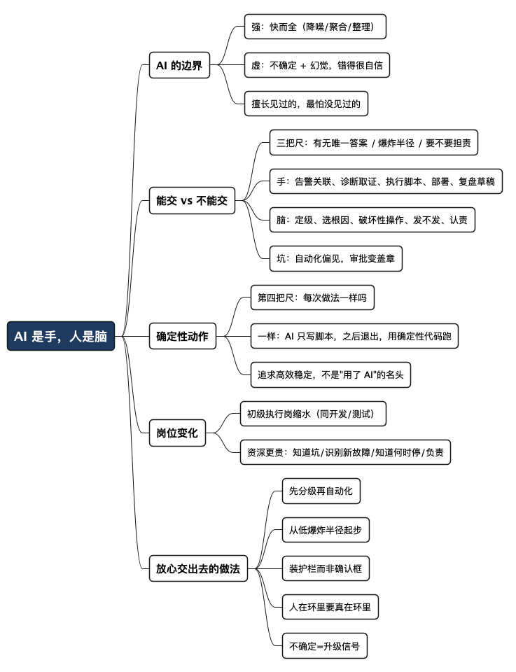

AI 是运维的手，人是运维的脑
Posted on 六 22 8月 2026 in AI
| Abstract | AI 是运维的手，人是运维的脑 |
|---|---|
| Authors | Walter Fan |
| Category | AI |
| Version | v1.0 |
| Updated | 2026-08-22 |
| License | CC-BY-NC-ND 4.0 |
2017 年 2 月 28 日上午 9 点 37 分（太平洋时间），AWS 一位工程师照着一份用了很久的 playbook，敲了一条下线服务器的命令，想摘掉一小撮跟计费有关的机器。命令没错，playbook 也没错，只是其中一个参数填错了——本该下线一小批，结果下线了一大批，还捎带上了另外两个子系统。其中一个叫 index 子系统，专门记录"每个文件到底存在哪块盘上"。它一垮，S3 就答不上来自己最基本的那个问题：给我一个文件名，数据在哪儿。
接下来的近四个半小时，半个互联网跟着抖了三抖。依赖 US-EAST-1 区的网站、App、连智能灯泡和摄像头都受了影响。有家风险建模公司 Cyence 估算，光是标普 500 里那些公司，损失就在 1.5 亿美元上下。事后 AWS 的复盘很坦诚，改进措施也很实在：给那个工具加了护栏——下线速度放慢，一旦会把某个子系统砍到安全水位线以下就直接拦住。
我为什么用一个八年前、跟 AI 半点关系没有的故事开头？因为它把今天这个话题最要命的地方先摆出来了：运维出的大事，往往不是"不会做"，而是"做得太快、太顺、没人拦一下"。 现在我们又多了一个手快、话多、还偶尔一本正经胡说八道的新同事——大语言模型。以前没 AI 不也过来了吗？现在运维团队精简了一大半，把监控、告警、扩容、部署都甩给 AI，到底靠不靠谱？
我的答案很简单：AI 可以当运维的手，但脑子还得是人的。 下面把这句话拆开讲清楚——哪些能交，哪些不能交，以及为什么初级运维岗在缩、资深运维反而更金贵。
- 能交给 AI 的，是"有标准答案、错了也不致命"的机械动作。
- 不能交的，是"要看当下上下文、错了会引发新事故、出了事得有人担责"的判断。
先说清楚：AI 到底强在哪，虚在哪
大模型这东西，本质上是在"猜下一个最像样的词"。它不是在查事实，是在算概率。这决定了它两个特点，一个是优点，一个是软肋，运维场景里都躲不开。
优点是快而全。一次告警风暴来了，几百条报警糊你一脸，人得一条条看、一条条关联。AI 擅长的正是"把散落的信号聚成一个事件"——这个不整齐的活儿，它比人快得多，也不会因为凌晨三点犯困而漏掉。业界不少 AIOps（用 AI 做运维的统称）的说法是，告警降噪能砍掉六到八成的噪音，事件的平均恢复时间（MTTR，从发现故障到恢复的耗时）能压下去四到六成。这些数字来自厂商和咨询报告，具体到你家环境要打几折，得自己量，但方向是对的：重复、机械、有套路的活儿，AI 确实能扛。
软肋是不确定。同一个问题问两遍，它可能给你两个答案；没见过的故障，它照样给你一个"听起来很有道理"的解释——这就是所谓的幻觉（hallucination，模型一本正经地编造看似合理其实错误的内容）。最坑的地方在于：它错得很自信。 一个新手工程师不懂会说"我不确定"，会去问人；大模型不会，它会用一样流畅的语气，给你一个可能完全错误的根因分析。凌晨故障、时间紧、压力大的时候，这种"自信的错"最要命。
所以一句话记住 AI 的边界：
AI 擅长"它见过的"，最怕"它没见过的"。 而产线上真正让人半夜爬起来的，恰恰都是"没见过的"。
一张表：运维的活儿，哪些能交、哪些不能交
判断能不能交给 AI，别看这活儿"高不高级"，看三个问题——这三条是从公开的事故复盘和一线实践里反复被验证出来的：
- 这个动作有没有唯一正确答案？ 有，就是好的自动化候选；答案取决于当下上下文，就留人。
- AI 做错了，炸出去多大？（业界叫 blast radius，爆炸半径）重启一个无状态的 Pod，错了顶多再重启一次；误重启一个有状态的数据库，那是给你造一个新事故。
- 出了事，需不需要有个人对结果负责？ 需要，就必须有人签字，AI 只能建议。
拿这三把尺子量一量，界限就清楚了：
| 运维动作 | 更适合交给 AI（手） | 必须留给人（脑） |
|---|---|---|
| 告警处理 | 关联、降噪、聚合成一个事件 | 定级（Sev1 还是 Sev3，直接决定谁被叫醒） |
| 诊断 | 拉日志、查依赖、给出带置信度的根因猜测 | 在几个都说得通的根因里拍板选哪个 |
| 执行 | 重启服务、清缓存、扩容、按 runbook 跑固定步骤 | 数据库变更、改动客户可见的流量路由、跨多服务的回滚 |
| 部署 | 写脚本、跑流水线、灰度发布、自动回滚到上一版 | 决定"这个点要不要发"、发布窗口、要不要熔断止损 |
| 复盘 | 生成时间线、拉证据、起草 postmortem 骨架 | 定性根因、认责、定改进项 |
| 沟通 | 起草状态页更新、给出通知模板 | 点"发布"按钮、对客户和领导说什么 |
看出规律没有？左边这一列，全是"体力活"和"信息整理活"，AI 干得又快又好；右边这一列，全是"这一步该不该做、做了谁担着"的判断。
这里有个特别隐蔽的坑，叫自动化偏见（automation bias）：AI 在旁边催着"建议执行回滚"，人在时间压力下，往往会下意识点"同意"，把审批变成了盖章。这时候"人在环里"（human-in-the-loop，即关键动作要人确认）就成了摆设——风险不是 AI 接管了运维，而是人不再真正拥有它，却还得为结果负责。 所以留给人的那一列，不能只是加个确认弹窗了事，得让人真的看得懂、拦得住、改得了。
最好的自动化，是让 AI 写完就下班
前面讲"AI 是手"，容易给人一个错觉：以为把活儿交给 AI，就是让它常驻在产线上、实时给建议、随时待命。其实对相当一部分运维动作来说，这是过度使用，甚至是花冤枉钱。
想想左边那一列里最规矩的那些活儿：定时清日志、批量重启一组无状态服务、按固定顺序滚动重启、每天凌晨把某张表归档。它们有个共同点——动作是确定的，不需要分析推理，不需要看图识物，输入输出都定死了。 这种活儿，AI 该出现的地方只有一次：帮你把脚本写好。写完，你测好、评审过、跑几轮确认无误，之后整个流程就跟 AI 一点关系都没有了——一个 cron、一条流水线、一段幂等（idempotent，重复执行结果不变）的脚本，稳稳当当跑就行。
这恰恰是我最想强调的一点：运维要的是高效和稳定，不是"用了 AI"这个名头。 一段测试过的确定性脚本，比每次都现场调一次大模型要快得多、便宜得多，也稳得多——它不会因为模型版本更新、prompt 漂移、或者哪天多模态服务抽风，就给你来个不一样的结果。你把一个本可以确定的动作交给一个概率模型去实时决定，等于给稳定性凭空引进了一个不确定的变量。
所以判断"要不要让 AI 实时在环里"，可以再加一把尺子：
这个动作每次的正确做法一样吗？ 一样——AI 只负责"写脚本"这一次，之后请它下班，用确定性代码去跑。 不一样、要看当下上下文——才轮到 AI 的多模态、推理能力实时上场。
一句话：AI 最大的价值，往往是帮你把不确定的活儿变成确定的脚本，然后自己退出这个环。 分不清这条界线，就容易掉进两个坑——要么该自动化的没自动化，还在手敲；要么本该一段脚本搞定的事，非塞个大模型进去实时决策，慢、贵、还不稳。
为什么初级运维在缩，资深运维反而更贵
回到开头那个 AWS 的故事。那位工程师照着 playbook 敲命令——这活儿今天完全可以让 AI 或 AI 写的脚本来干，而且加上护栏之后，大概率比人手敲更不容易填错参数。这就是初级运维岗位正在被吃掉的部分："照着流程执行"这件事，本来就是自动化最想吃的一块肉。
就像开发和测试一样。写增删改查、跑固定测试用例这类有套路的活儿，AI 一上来就把门槛拉平了，初级岗位自然缩水。运维也一样，那种"盯屏幕、看告警、按手册操作"的一线执行岗，会被 AI 和脚本大量替代。
但请注意，被吃掉的是"执行"，不是"判断"。而判断这东西，恰恰是资深运维最值钱的资产，而且买不来、抄不走、AI 学不像。为什么？
- 他知道哪些坑不能踩。 资深运维的脑子里装着一本"血泪账"——哪个操作在哪种情况下会连锁反应，哪条命令看着人畜无害其实是核弹。这些都是拿真实事故换来的，不在任何文档里，AI 也没在训练数据里见过你家那套祖传架构。
- 他能识别"没见过的"。 前面说了，AI 最怕新故障。而资深工程师的价值，正是在一团乱麻、几个根因都说得通、信息还不全的时候，凭经验和直觉拍一个板。这种"在不确定里做决策"的能力，是大模型的短板，是人的长板。
- 他知道什么时候该停。 AI 会一直给建议，越算越自信；好的工程师知道"我现在超出我能判断的范围了，得升级、得叫人"。让不确定触发"找人"，而不是"AI 继续硬算"——这个刹车，只有人踩得住。
- 他为结果负责。 定级、认责、决定发不发——这些动作背后是责任，是要对客户和公司交代的。AI 没法负责，一个"named person"（有名有姓的人）才能负责。
所以运维团队的形状在变：从一大批盯屏幕的手，变成一小群会判断的脑，外加一群不知疲倦的 AI 助手。 资深运维不是被 AI 取代，而是被 AI 放大了——他一个人的判断力，通过 AI 的手，能覆盖过去十个人的执行量。
怎么放心地把手交出去：一套"人主导、AI 助攻"的做法
放心不是靠信任 AI，是靠设计。把主动权攥在人手里，同时把机械活儿尽量交出去，可以照这几步走：
-
先分级，再自动化。 把你最近三十次故障翻出来，一步步标注：哪些是纯机械动作（拉日志、关联告警、更新状态页），哪些真的动用了人的判断（定级、选根因、决定止损）。机械的那部分，才是自动化的第一批口粮。别一上来就让 AI 碰定级和对外沟通。
-
从低爆炸半径的场景起步。 告警降噪、runbook 检索、日志聚合——错了也不致命，拿来练手最合适。数据库迁移、流量切换、跨服务回滚——先别碰。在小事上把 AI 的准确率验出来，再往上加。
-
给每个动作装护栏，而不是装个确认框。 回想 AWS 那个 fix：护栏是"下线太快就拦住""砍到安全线以下就拒绝执行"。给 AI 写的脚本和 AI 的操作也一样——最小权限（默认只读，写权限限定到具体命名空间）、破坏性操作强制人工确认、所有动作记不可篡改的审计日志、上线前先 dry-run（空跑）把 diff 给人看。
-
让"人在环里"是真的在环里，不是盖章。 审批的人得看得懂 AI 在建议什么、为什么（要的是理由，不是一个置信度分数），能随时暂停、否决、接管，事后还要复盘"AI 这次建议靠不靠谱"并反哺改进。同时明确一件事：哪些动作是 AI 发起的、哪些是人发起的，必须一眼可辨，否则监督就是纸上谈兵。
-
把"不确定"设成升级信号。 别只在"AI 报错"时找人，要在"AI 不确定"时就找人。一个会说"这个我拿不准，叫个资深的来"的系统，比一个超出能力范围还在硬给建议的系统安全得多。
一句话：
让 AI 干它擅长的快活儿，把不确定的、致命的、要担责的，牢牢留在人手里。 护栏不是给 AI 添麻烦，护栏是让你敢把手交出去的前提。
总结：手可以外包，脑子不能
回到最初那个问题：产线那么复杂，突发情况那么多，都交给 AI，行吗？
行一半。运维脚本可以让 AI 写，监控、告警、扩容、部署这些执行动作可以交给 AI 或 AI 写的脚本——这些是"手"的活儿，AI 又快又稳。而且对那些每次做法都一样的确定性动作，AI 写完脚本、你测好之后，就该请它下班，用确定性代码去跑，别让概率模型实时掺和进来——运维要的是高效和稳定，不是"用了 AI"的名头。但判断和决策必须留给人：做什么、不做什么、这一步该不该走、出了事谁担着——这些是"脑"的活儿，当下这个环节，一个都少不掉，尤其是突发紧急情况。
初级运维岗会像初级开发、初级测试一样缩水，这是趋势，拦不住。但那些踩过无数坑、手里攥着一本血泪账、能在一团乱麻里拍板的资深运维，只会更值钱——因为 AI 恰好补齐了他们的手，却补不齐他们的脑。
2017 年那条命令给我们留了一句话，今天正好还给 AI 时代：云终究是一栋栋楼盖的，楼里终究还是人在管。
那么现在就可以做一件事：翻出你最近三十次故障，问自己每一步——这是手，还是脑？
全文思维导图
@startmindmap
<style>
mindmapDiagram {
node {
BackgroundColor #F8F9FA
RoundCorner 10
Padding 10
FontSize 13
}
:depth(0) {
BackgroundColor #1E3A5F
FontColor white
FontSize 18
FontStyle bold
}
:depth(1) {
FontSize 15
FontStyle bold
}
:depth(2) {
FontSize 13
}
}
</style>
* AI 是手，人是脑
** AI 的边界
*** 强：快而全（降噪/聚合/整理）
*** 虚：不确定 + 幻觉，错得很自信
*** 擅长见过的，最怕没见过的
** 能交 vs 不能交
*** 三把尺：有无唯一答案 / 爆炸半径 / 要不要担责
*** 手：告警关联、诊断取证、执行脚本、部署、复盘草稿
*** 脑：定级、选根因、破坏性操作、发不发、认责
*** 坑：自动化偏见，审批变盖章
** 确定性动作
*** 第四把尺：每次做法一样吗
*** 一样：AI 只写脚本，之后退出，用确定性代码跑
*** 追求高效稳定，不是"用了 AI"的名头
** 岗位变化
*** 初级执行岗缩水（同开发/测试）
*** 资深更贵：知道坑/识别新故障/知道何时停/负责
** 放心交出去的做法
*** 先分级再自动化
*** 从低爆炸半径起步
*** 装护栏而非确认框
*** 人在环里要真在环里
*** 不确定=升级信号
@endmindmap

本作品采用知识共享署名-非商业性使用-禁止演绎 4.0 国际许可协议进行许可。 欢迎在我的个人网站 https://www.fanyamin.com 访问原文并评论。